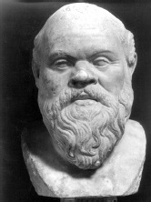

Batı felsefesinin kurucusu olarak kabul gören Sokrates (MÖ 470-399) hayatı boyunca tek bir kitap bile yazmamıştır. Bizler onu dolaylı olarak, yani sadece diğer insanların onun hakkında yazdıklarından tanıyoruz.

MÖ 5. yüzyılda Yunanistan’da, Atina şehir devletinde doğan Sokrates, Atina’nın girdiği savaşların birinde asker olarak kendini gösterdi ve sonraları Atina toplumunda sıra dışı bir şahsiyet oldu. Karşısına çıkan herkesle, özellikle de şehrin delikanlılarıyla sohbet ederdi. Tüm ülkeyi gezerek gençlere retorik ve diğer siyasi becerileri öğreten Sofistlerin aksine, Sokrates kimseden para almaz ve daha da önemlisi öğretecek hiçbir şeyi olmadığını iddia ederdi! Sokrates hakiki bilgiye sahip olmadığını ve eğer başkalarından daha bilgeyse, bunun yalnızca kendi cahilliğinin farkında olmasından kaynaklandığını belirtirdi.
Sokrates hakkında bilinenlerin çoğunu en bilinen öğrencisi Platon’a (MÖ 427-347) borçluyuz. Bu alandaki araştırmacıların çoğu Platon’un gençlik diyalogları Sokrates ve Sokrates’in felsefeye karşı tutumunun tarihsel olarak en doğru temsili olduğuna inanır. Bu diyaloglarda genellikle Sokrates bir şeylerin, örneğin adaletin ne olduğunu bildiğini iddia eden Atinalı bir vatandaşla karşı karşıya gelir. Ardından, iddia ettiği şeyi hiçbir şekilde bilmediğini ona kanıtlamaya koyulur.
MÖ 399’da Sokrates genç Atinalıları ‘doğru yoldan saptırmak’ suçundan yargılandı. Platon tarafından Sokrates’in Savunması diyalogunda kaydedilen duruşmasında Sokrates, sorgulanmayan hayatın yaşamaya değer olmadığına dair ünlü iddiasını ortaya atar. Masum olduğunu öne sürerek kendisini savunur ama suçlu bulunur. Bir tür zehir olan baldıran otunu içmeye zorlanarak ölüme mahkum edilir. Sokrates’in arkadaşları ve hayranlarıyla felsefe tartışarak geçen son saatleri Platon’un diyalogu Phaidon‘da dokunaklı bir biçimde belgelenmiştir.
EK BİLGİLER:
1. Pek çok hukuk fakültesinde profesörlerin halen kullanmakta olduğu Sokratik Yöntem, Sok-rates’in öğrencilerini ısrarcı bir şekilde sorgulama tarzına dayanır.
2. Çağdaşlarının çoğu Sokrates’in çok çirkin olduğunu belirtmiştir.
3. Komedya yazarı Aristofanes (MÖ 448-380) Bulutlar adlı oyununda Sokrates’le dalga geçer.